Luvun tavoitteet
Tämän luvun tavoitteena on, että vahvistat edellisessä luvussa käsiteltyjen asioiden osaamista ja sovellat oppimaasi $xyz$-koordinaatiston vektoreihin. Lisäksi osaat
- piirtää $xyz$-koordinaatiston ja sijoittaa sinne pisteitä
- ratkaista vektorilaskentaan liittyviä yhtälöryhmiä ilman laskinta ja laskimella.
Kolmiulotteisen avaruuden vektorit
Edellisessä luvussa tutustuimme $xy$-koordinaatistoon, jonka avulla voidaan kuvata tason pisteitä ja vektoreita. Kolmiulotteisen avaruuden pisteitä ja vektoreita voidaan kuvata niin sanotun $xyz$-koordinaatiston avulla. Tämä koordinaatisto saadaan $xy$-koordinaatistosta lisäämällä siihen yksi akseli, joka on kohtisuorassa sekä $x$-akselia että $y$-akselia vastaan. Kolmatta akselia sanotaan $z$-akseliksi.

Yllä olevassa kuvassa $z$-akseli suuntautuu kohti katsojaa. Kolmiulotteista koordinaatistoa voidaan katsoa muistakin suunnista, jolloin esimerkiksi $x$-akseli saattaa suuntautua kohti katsojaa, kuten alla olevassa kuvassa. Koordinaattiakselien keskinäiset suunnat pysyvät kuitenkin samoina. Niitä voidaan havainnollistaa oikean käden sormien avulla: peukalo vastaa $x$-akselia, etusormi $y$-akselia ja keskisormi $z$-akselia.

Kolmiulotteisen avaruuden piste $P$ ilmaistaan lukukolmikkona $(x,y,z)$, missä ensimmäiset kaksi lukua ilmoittavat pisteen paikan $x$- ja $y$-akseleiden suhteen ja kolmas koordinaatti kertoo, missä piste sijaitsee $z$-akselin suunnassa origoon verrattuna. Alla olevassa kuvassa on havainnollistettu $xyz$-koordinaatiston pisteitä $S=(1,0,4)$ ja $R = (3,2,2)$.
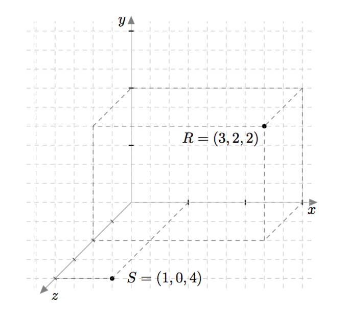
Yllä olevasta kuvasta nähdään myös, miten $xyz$-koordinaatisto yleensä piirretään. Katsojaa kohti tuleva akseli piirretään 135 asteen kulmassa oikealle suuntautuvaan akseliin nähden. Lisäksi katsojaa kohti tulevan akselin yksikön pituudeksi valitaan noin puolet muiden akseleiden yksikön pituudesta, jotta vaikutelmasta tulee kolmiulotteinen.
Esimerkiksi yllä olevassa kuvassa $x$- ja $y$-akseleiden yksiköksi on valittu kolme ruutua ja $z$-akselin yksikön pituudeksi yhden ruudun lävistäjä eli $\sqrt{2}\approx 1{,}4$ ruutua.
$xyz$-koordinaatisto
Piirrä kolmiulotteinen koordinaatisto ja merkitse siihen pisteet $A=(3,0,1)$, $B=(-2,1,2)$ ja $C=(2,3,-2)$.
$xyz$-koordinaatisto
Päättele, mitä tiedät pisteen $P$ koordinaateista, jos piste $P$ on
- $x$-akselilla
- $y$-akselilla
- $z$-akselilla.
$xyz$-koordinaatisto
Päättele, mitä tiedät pisteen $P$ koordinaateista, jos piste $P$ on
- $xy$-tasossa
- $yz$-tasossa
- $xz$-tasossa.
Kolmiulotteisessa koordinaatistossa kaikki vektorit voidaan esittää koordinaattiakselien suuntaisten yksikkövektoreiden avulla samaan tapaan kuin $xy$-tasossa. Erona on, että koordinaattiakselien suuntaisia yksikkövektoreita on nyt kolme: $\vi$, $\vj$ ja $\vk$. Niitä on havainnollistettu alla olevassa kuvassa.

Vektoreiden esittäminen vektoreiden $\bar{\imath}$, $\bar{\jmath}$ ja $\vk$ avulla
Ilmoita alla olevan kuvan vektori $\bar{v}$ vektoreiden $\bar{\imath}$, $\bar{\jmath}$ ja $\vk$ avulla.

MÄÄRITELMÄ: VEKTOREIDEN SAMUUS
Kaksi vektoria ovat samat, jos ne voidaan esittää samalla tavalla vektoreiden $\bar{\imath}$, $\bar{\jmath}$ ja $\vk$ avulla. Tarkemmin sanottuna vektorit $\vv = x_1\vi + y_1\vj + z_1\vk$ ja $\vw = x_2\vi + y_2\vj + z_2\vk$ ovat samat eli $\vv = \vw$, jos ja vain jos $x_1 = x_2$ ja $y_1 = y_2$ ja $z_1 = z_2$.
Vektoreiden samuus
Tiedetään, että $\vv = -9\vi + (3-a)\vj + 4b\vk$ ja $\vw = 3c\vi - 7\vj - 20\vk$. Etsi sellaiset luvut $a$, $b$ ja $c$, että $\vv = \vw$. Kuinka monella tavalla tällaiset luvut on mahdollista valita?
Pisteen $P = (x,y,z)$ paikkavektori määritellään kolmiulotteisessa koordinaatistossa samaan tapaan kuin $xy$-tasossa: pisteen $P = (x,y,z)$ paikkavektori tarkoittaa vektoria, jonka alkupiste on origo ja loppupiste on $P$.
Paikkavektori
Ilmaise alla olevan kuvan vektori $\vv$ vektoreiden $\vi$, $\vj$ ja $\vk$ avulla. Minkä pisteen paikkavektori se on?
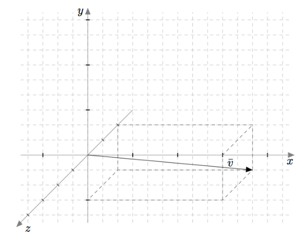
Kolmiulotteisessa koordinaatistossa nollavektori tarkoittaa vektoria $\bar{0} = 0\vi + 0\vj + 0\vk$. Se on origon eli pisteen $O = (0,0,0)$ paikkavektori.
Vektoreiden laskutoimituksia
Vektoreiden summa ja erotus lasketaan $xyz$-koordinaatistossa samaan tapaan kuin $xy$-koordinaatistossa eli komponenteittain. Esimerkiksi vektoreiden $\vv = \textcolor{blue}{2}\vi \textcolor{red}{-5}\vj + \textcolor{magenta}{3}\vk$ ja $\vw = \textcolor{blue}{-7}\vi + \textcolor{red}{9}\vj + \textcolor{magenta}{8}\vk$ summa on $$ \begin{align*} \vv + \vw &= (\textcolor{blue}{2-7})\vi + (\textcolor{red}{-5}+\textcolor{red}{9})\vj + (\textcolor{magenta}{3}+\textcolor{magenta}{8})\vk \\ &= \textcolor{blue}{-5}\vi + \textcolor{red}{4}\vj + \textcolor{magenta}{11}\vk \end{align*} $$ ja erotus on $$ \begin{align*} \vv - \vw &= (\textcolor{blue}{2}-(\textcolor{blue}{-7}))\vi + (\textcolor{red}{-5}-\textcolor{red}{9})\vj + (\textcolor{magenta}{3}-\textcolor{magenta}{8})\vk \\ &= \textcolor{blue}{9}\vi \textcolor{red}{- 14}\vj \textcolor{magenta}{- 5}\vk. \end{align*} $$
Vektoreiden summa ja erotus
Tutki vektoreita $\bar{v}= 3\bar{\imath}-4\bar{\jmath} + 7\vk$, $\bar{w}=9\bar{\imath}-5\vk$ ja $\bar{u}=-2\vj+6\vk$. Laske seuraavat vektorit:
- $\bar{v}+\bar{w}$
- $\bar{w}+\bar{u}$
- $\bar{v}-\bar{w}$
- $\bar{u}-\bar{v}$.
Summan ja erotuksen määrittäminen piirtämällä on $xyz$-koordinaatistossa hankalampaa kuin $xy$-koordinaatistossa, koska tarkkojen kolmiulotteisten kuvien piirtäminen on usein vaikeaa. Summaa ja erotusta voidaan kuitenkin havainnollistaa mallikuvilla. Summavektori saadaan muodotettua laittamalla yhteenlaskettavat vektorit peräkkäin ja piirtämällä vektori ensimmäisen yhteenlaskettavan alkupisteestä viimeisen yhteenlaskettavan loppupisteeseen. Tätä on havainnollistettu alla olevassa kuvassa.
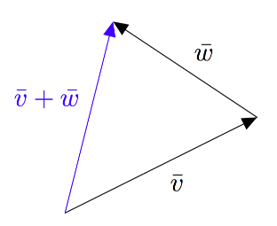
Erotusvektori $\vv - \vw$ saadaan muodostettua laittamalla peräkkäin vektorit $\vv$ ja $-\vw$ kuten alla olevassa kuvassa.
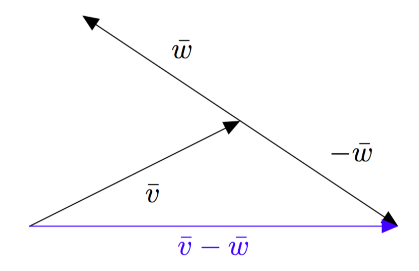
Jos vektorit $\vv$ ja $\vw$ alkavat samasta pisteestä kuten alla olevassa kuvassa, löydetään erotusvektori $\vv - \vw$ etsimällä reitti, jossa kuljetaan ensin vektori $\vw$ vastakkaiseen suuntaan ja sen jälkeen vektori $\vv$. Tämä reitti vastaa summaa $-\vw + \vv$, joka on sama kuin $\vv-\vw$.
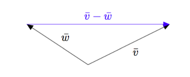
Tätä ideaa voidaan hyödyntää kahden pisteen välisen vektorin määrittämisessä samaan tapaan kuin $xy$-koordinaatistossa. Alla olevasta kuvasta voidaan päätellä, että vektori $\pv{AB}$ saadaan vähentämällä loppupisteen paikkavektorista $\pv{OB}$ alkupisteen paikkavektori $\pv{OA}$ eli $\pv{AB} = \pv{OB} - \pv{OA}$.
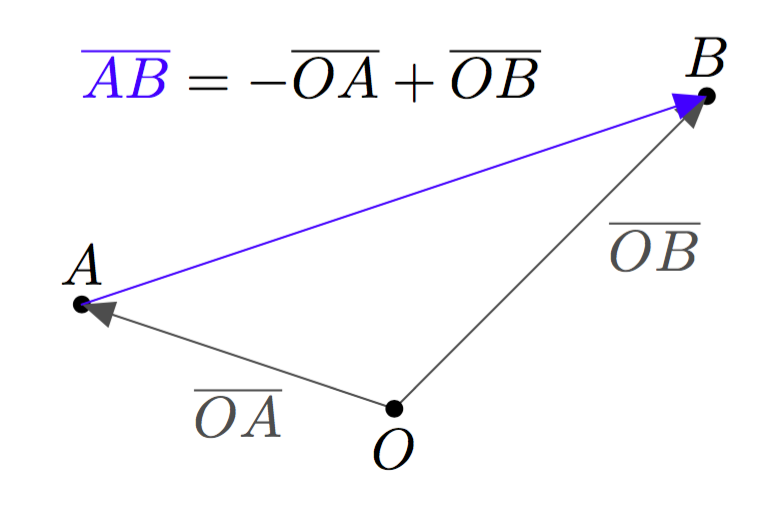
Vektoreiden summa ja erotus
Tiedetään, että $A= (1,5,-3)$ ja $\pv{AB} = -4\vi-7\vj + 15 \vk$.
- Muodosta pisteen $A$ paikkavektori.
- Määritä pisteen $B$ paikkavektori $\pv{OB}$ ja piste $B$. Havainnollista ratkaisuasi mallikuvan avulla.
- Selitä omin sanoin, miten paikkavektorin $\pv{OA}$ muodostaminen auttoi b-kohdan ratkaisemista.
Myös vektorin kertominen reaaliluvulla tapahtuu $xyz$-koordinaatistossa samaan tapaan kuin $xy$-koordinaatistossa eli komponenteittain. Esimerkiksi vektorin $\vv = 2\vi - 5\vj + 3\vk$ skalaarimonikerta $-15\vv$ saadaan kertomalla kaikki komponentit luvulla $-15$. Siten $$ \begin{align*} -15\vv &= -15\cdot 2\vi + (-15) \cdot (-5)\vj + (-15)\cdot 3\vk \\ &= -30\vi + 75\vj - 45\vk. \end{align*} $$
Alla olevassa kuvassa piste $P$ jakaa janan $AB$ suhteessa $1:3$. Jana $AB$ muodostuu siis neljästä yhtä pitkästä osasta. Jana $AP$ on yhden osan mittainen ja jana $PB$ on kolmen osan mittainen. Tätä tietoa voidaan hyödyntää esimerkiksi pisteen $P$ paikkavektorin määrittämisessä. Sitä harjoitellaan seuraavassa tehtävässä.
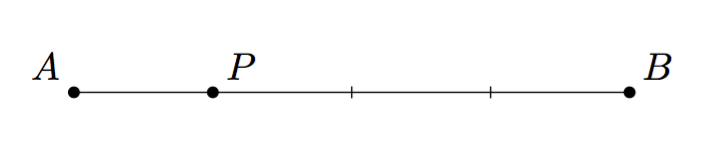
Vektorin kertominen reaaliluvulla
Tiedetään, että $A = (1,-1,0)$ ja $B = (5,7,8)$. Tiedetään lisäksi, että piste $P$ jakaa janan $AB$ suhteessa $1:3$ kuten yllä olevassa kuvassa. Piirrä tilanteesta mallikuva ja havainnollista ratkaisusi vaiheita sen avulla.
- Määritä paikkavektorit $\pv{OA}$ ja $\pv{OB}$.
- Muodosta vektori $\pv{AB}$.
- Ilmaise vektori $\pv{AP}$ vektorin $\pv{AB}$ avulla.
- Määritä paikkavektori $\pv{OP}$.
- Mitkä ovat pisteen $P$ koordinaatit?
Vektorin pituus ja suunta
Vektorin pituus saadaan $xyz$-koordinaatistossa laskettua Pythagoraan lauseen avulla, mutta sitä täytyy soveltaa useamman kerran. Alla olevan kuvan vektorin $\vv$ pituus voidaan selvittää laskemalla ensin kuvassa näkyvän suorakulmaisen särmiön pohjan lävistäjän $c$ pituus. Se saadaan Pythagoraan lauseen mukaisesta yhtälöstä $$a^2 + b^2 = c^2.$$ Tässä tapauksessa $c^2 = 2^2 + 3^2 = 13$, joten särmiön pohjan lävistäjän pituus on $c = \sqrt{13} \approx 3{,}6$.

Särmiön pohjan lävistäjän $c$ ja särmiön korkeuden $h$ avulla saadaan selville vektorin $\vv$ pituus, kun Pythagoraan lausetta sovelletaan alla olevassa kuvassa näkyvään suorakulmaiseen kolmioon. Pythagoraan lauseen mukaan $$|\vv|^2 = c^2 + h^2.$$ Edellä todettiin, että $c^2 = a^2 + b^2$, joten saadaan yhtälö $$|\vv|^2 = a^2 + b^2 + h^2.$$ Tässä tapauksessa $|\vv|^2 = 2^2 + 3^2 + 2^2 = 17$, joten $|\vv| = \sqrt{17} \approx 4{,}1$.

Koska toiseen potenssiin korotus tekee kaikista luvuista epänegatiivisia, voidaan vektorin pituus määritellä seuraavasti:
MÄÄRITELMÄ: VEKTORIN PITUUS
Vektorin $\vv=x\vi+y\vj + z\vk$ pituus on $$|\vv|=\sqrt{x^2+y^2+z^2}.$$
Vektorin pituus
Piirrä pisteen $A = (4,1,3)$ paikkavektori suorakulmaisen särmiön avaruuslävistäjänä ja laske paikkavektorin pituus.
Vektorin pituus
Tarkastele vektoria $\vv = 2\vi-6\vj-3\vk$.
- Laske vektorin $\vv$ pituus $|\vv|$.
- Muodosta vektori $\vw = -5\vv$.
- Laske vektorin $\vw$ pituus $|\vw|$.
- Millä luvulla pituutta $|\vv|$ pitäisi kertoa, jotta se olisi sama kuin vektorin $\vw$ pituus?
TEOREEMA
Kaikilla vektoreilla $\vv$ ja reaaliluvuilla $t$ pätee, että $$|t\vv|=|t|\cdot |\vv|.$$
Perustelu: Tarkastellaan vektoria $\vv = x\vi + y\vj + z\vk$ ja reaalilukua $t$. Vektorin $\vv$ pituus on $$|\vv|=\sqrt{x^2+y^2+z^2}.$$ Vektorin $t\vv = tx\vi + ty\vj + tz\vk$ pituus on puolestaan $$\begin{align*} |t\vv| &=\sqrt{(tx)^2+(ty)^2+(tz)^2} \\ &=\sqrt{t^2x^2+t^2y^2+t^2z^2} \\ &=\sqrt{t^2(x^2+y^2+z^2)} \\ &=\sqrt{t^2}\sqrt{(x^2+y^2+z^2)} \\ &=|t|\sqrt{(x^2+y^2+z^2)}. \end{align*}$$ Huomataan, että tämä on sama kuin vektorin $\vv$ pituus kerrottuna luvun $t$ itseisarvolla. Siis $$|t\vv|=|t|\cdot |\vv|.$$
Toisen potenssin neliöjuuri
Edellisen teoreeman perustelussa käytettiin tietoa, että $\sqrt{t^2} = |t|$ kaikilla reaaliluvuilla $t$.
- Keksi esimerkki luvusta $t$, jolla $\sqrt{t^2} = t$.
- Keksi esimerkki luvusta $t$, jolla $\sqrt{t^2} \neq t$.
- Selitä omin sanoin, miksi edellä mainitun yhtälön $\sqrt{t^2} = |t|$ oikealla puolella tarvitaan itseisarvomerkit.
Palautetaan mieleen, että yksikkövektori tarkoittaa vektoria, jonka pituus on 1. Edellisen teoreeman avulla saadaan johdettua lauseke annetun vektorin suuntaiselle yksikkövektorille:
TEOREEMA
Vektorin $\vv \neq \bar{0}$ suuntainen yksikkövektori $\vv^0$ on $$\frac{1}{|\vv|}\vv.$$
Perustelu: Koska $\vv \neq \bar{0}$, niin vektorin $\vv$ pituus on positiivinen eli $|\vv| > 0$. Tällöin sen käänteisluku on määritelty ja positiivinen. Toisin sanottuna $$\frac{1}{|\vv|} > 0.$$ Positiivisella luvulla kerrottaessa vektorin suunta säilyy, joten vektori $$\vv^0 = \frac{1}{|\vv|}\vv$$ on samansuuntainen kuin vektori $\vv$. Sen pituudeksi saadaan edellisen teoreeman nojalla $$\begin{align*} \left| \vv^0 \right| &= \left| \frac{1}{|\vv|}\vv \right| \\ &= \left| \frac{1}{|\vv|}\right| \cdot |\vv| \\ &= \frac{1}{|\vv|} \cdot |\vv| \\ &= 1. \end{align*}$$
Yksikkövektori
Määritä vektorin $\va$ suuntainen yksikkövektori $\va^0$, jos
- $\va = -2\vi + \vj$
- $\va = \pv{AB}$, missä $A = (4,-1,2)$ ja $B = (6,2,-4)$.
Vektorien yhdensuuntaisuus määritellään $xyz$-koordinaatistossa samalla tavalla kuin $xy$-tasossa: vektorit $\vv$ ja $\vw$ ovat yhdensuuntaiset eli $\vv \parallel \vw$, jos ja vain jos $\vv=r\vw$ jollakin reaaliluvulla $r \neq 0$.
Kahden vektorin yhdensuuntaisuuden tutkiminen johtaa usein yhtälöpariin tai yhtälöryhmään. Esimerkiksi jos halutaan määrittää vakio $t$ niin, että vektorit $\vv = 0{,}5\vi + t\vj + \vk$ ja $\vw = -\vi + 1{,}5\vj-2\vk$ ovat yhdensuuntaisia, on tutkittava yhtälöä $$\vv = r\vw.$$ Tämä yhtälö voidaan kirjoittaa muodossa $$0{,}5\vi + t\vj + \vk = r(-\vi + 1{,}5\vj-2\vk)$$ eli $$0{,}5\vi + t\vj + \vk = -r\vi + 1{,}5r\vj-2r\vk.$$ Vektorien samuuden määritelmän mukaan tämä yhtälö toteutuu, jos ja vain jos yhtälön eri puolilla olevat vektorit voidaan ilmaista samalla tavalla vektoreiden $\vi$, $\vj$ ja $\vk$ avulla eli $$ \left\{\begin{aligned} -r &= 0{,}5 \\ 1{,}5r &= t \\ -2r &= 1 \end{aligned}\right. $$ Ratkaisuun pääseminen vaatii siis yhtälöryhmän ratkaisemisen. Seuraavaksi opettelemmekin ratkaisemaan yhtälöpareja ja yhtälöryhmiä.
Yhtälöryhmän ratkaiseminen
Edellisessä kappaleessa tutkittiin vektorien yhdensuuntaisuutta ja päädyttiin yhtälöryhmään $$ \left\{\begin{aligned} -r &= 0{,}5 \\ 1{,}5r &= t \\ -2r &= 1. \end{aligned}\right. $$ Ratkaistaan nyt tämä yhtälöryhmä eli etsitään kaikki sellaiset luvut $r$ ja $t$, joilla yhtälöryhmän kaikki yhtälöt toteutuvat.
Jos yhtälöryhmän ensimmäisen yhtälön molemmat puolet kerrotaan luvulla $-1$, saadaan yhtälö $$r = -0{,}5.$$ Se voidaan sijoittaa yhtälöryhmän toiseen yhtälöön, joka saadaan silloin kirjoitettua muodossa $$1{,}5\cdot (-0{,}5) = t.$$ Toisin sanottuna $$t = -0{,}75.$$ Tämä tarkoittaa, että yhtälöryhmän ainoa mahdollinen ratkaisu on $r = -0{,}5$ ja $t = -0{,}75$. Vielä on kuitenkin tarkistettava, että se todella on yhtälöryhmän ratkaisu. Tämä tehdään sijoittamalla nämä luvut alkuperäiseen yhtälöryhmään ja tarkistamalla, että kaikki yhtälöt toteutuvat: $$ \left\{\begin{aligned} -(-0{,}5) &= 0{,}5 \\ 1{,}5\cdot (-0{,}5) &= -0{,}75 \\ -2\cdot (-0{,}5) &= 1 \end{aligned}\right. $$ Kaikki yhtälöt toteutuvat, joten yhtälöryhmän $$ \left\{\begin{aligned} -r &= 0{,}5 \\ 1{,}5r &= t \\ -2r &= 1 \end{aligned}\right. $$ ratkaisu on $r = -0{,}5$ ja $t = -0{,}75$.
Yhtälöryhmän ratkaiseminen
Määritä kaikki sellaiset luvut $t$, joilla vektorit $\vv = 8t\vi + (3t-6)\vj + (6t-4)\vk$ ja $\vw = 4\vi + 3\vj+4\vk$ ovat yhdensuuntaiset. Ovatko vektorit $\vv$ ja $\vw$ tällöin saman- vai vastakkaissuuntaiset?
Tutkitaan seuraavaksi yhtälöparia $$ \left\{\begin{aligned} x+2y &= 5 \\ 2x-3y &= 3. \end{aligned}\right. $$ Se voidaan ratkaista samaan tapaan kuin edellä tehtiin. Ratkaistaan ensin ylemmästä yhtälöstä toinen tuntematon, esimerkiksi $x$. Vähentämällä yhtälön $x + 2y = 5$ molemmilta puolilta $2y$ saadaan yhtälö $$x = 5-2y.$$ Se voidaan sijoittaa alempaan yhtälöön, joka saadaan silloin kirjoitettua muodossa $$2(5-2y) - 3y = 3.$$ Kerrotaan tämän yhtälön vasemmalla puolella sulut auki, jolloin yhtälö saadaan muotoon $$10-4y - 3y = 3.$$ Sieventämällä yhtälön vasen puoli saadaan se muotoon $$10-7y = 3.$$ Vähentämällä yhtälön molemmilta puolilta 10 saadaan uusi yhtälö $$-7y = -7.$$ Jakamalla tämän yhtälön molemmat puolet luvulla $-7$ saadaan $$y = 1.$$ Koska aiempien laskujen mukaan $x = 5-2y$, saadaan $$x = 5-2\cdot 1 = 5-2 = 3.$$ Tämä tarkoittaa, että yhtälöparin ainoa mahdollinen ratkaisu on $x = 3$ ja $y = 1$. Tarkistetaan vielä, että nämä luvut todella toteuttavat kummankin yhtälön: $$ \left\{\begin{aligned} 3+2\cdot 1 &= 3 + 2 = 5 \\ 2\cdot 3-3\cdot 1 &= 6-3 = 3. \end{aligned}\right. $$ Kaikki yhtälöt toteutuvat, joten yhtälöparin $$ \left\{\begin{aligned} x+2y &= 5 \\ 2x-3y &= 3. \end{aligned}\right. $$ ratkaisu on $x = 3$ ja $y = 1$.
Yhtälöparin ratkaiseminen
Ratkaise yhtälöpari $$ \left\{\begin{aligned} 3x-3y &= 1 \\ x+3y &= 5. \end{aligned}\right. $$
Edellä tarkastellun yhtälöparin $$ \left\{\begin{aligned} x+2y &= 5 \\ 2x-3y &= 3. \end{aligned}\right. $$ ratkaisua voidaan havainnollistaa seuraavasti: Ensimmäinen yhtälö $x + 2y = 5$ voidaan kirjoittaa muodossa $2y = 5-x$ ja edelleen muodossa $$y = \frac{5-x}{2}.$$ Sen toteuttavia lukupareja $(x,y)$ on vaikka kuinka paljon, sillä luvuksi $x$ voidaan valita mikä tahansa reaaliluku ja sen jälkeen vastaava $y$:n arvo saadaan yllä olevasta yhtälöstä. Esimerkiksi jos $x = 0$, saadaan $$y = \frac{5}{2} = 2{,}5.$$ Jos $x = 1$, saadaan $$y = \frac{4}{2} = 2.$$ Jos $x = 3$, saadaan $$y = \frac{2}{2} = 1.$$ Lukuparit $(0;2{,}5)$, $(1,2)$ ja $(3,1)$ ovat esimerkkejä yhtälön $x + 2y = 5$ ratkaisuista ja niitä voidaan havainnollistaa pisteinä koordinaatistossa:

Jos kerätään yhteen kaikki yhtälön $x + 2y = 5$ ratkaisut eli lukuparit, jotka ovat muotoa $$\left(x,\frac{5-x}{2}\right)$$ muodostavat ne koordinaatistoon suoran $$y = \frac{5}{2}-\frac{1}{2}x.$$
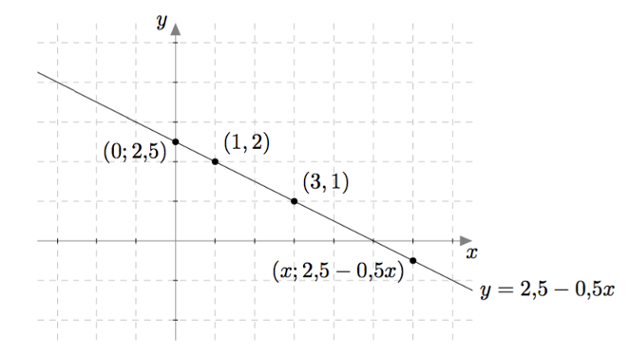
Toinen yhtälö $2x - 3y = 3$ voidaan kirjoittaa muodossa $-3y = 3-2x$ ja edelleen muodossa $$y = \frac{3-2x}{-3}.$$ Sen toteuttavia lukupareja $(x,y)$ on myös vaikka kuinka paljon, sillä luvuksi $x$ voidaan valita mikä tahansa reaaliluku ja sen jälkeen vastaava $y$:n arvo saadaan yllä olevasta yhtälöstä. Esimerkiksi jos $x = 0$, saadaan $$y = \frac{3}{-3} = -1.$$ Jos $x = 1{,}5$, saadaan $$y = \frac{0}{-3} = 0.$$ Jos $x = 3$, saadaan $$y = \frac{-3}{-3} = 1.$$ Lukuparit $(0,-1)$, $(1{,}5;0)$ ja $(3,1)$ ovat esimerkkejä yhtälön $2x - 3y = 3$ ratkaisuista ja niitä voidaan havainnollistaa pisteinä koordinaatistossa:
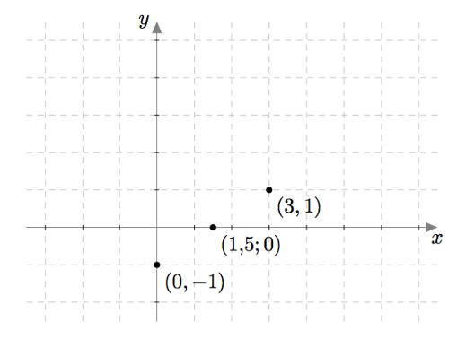
Jos kerätään yhteen kaikki yhtälön $2x - 3y = 3$ ratkaisut eli lukuparit, jotka ovat muotoa $$\left(x,\frac{3-2x}{-3}\right),$$ muodostavat ne koordinaatistoon suoran $$y = -1+\frac{2}{3}x.$$

Yhtälöparin $$ \left\{\begin{aligned} x+2y &= 5 \\ 2x-3y &= 3. \end{aligned}\right. $$ ratkaisut ovat täsmälleen ne lukuparit $(x,y)$, jotka toteuttavat sekä yhtälön $x+2y = 5$ että yhtälön $2x-3y = 3$. Toisin sanottuna tutkittavan yhtälöparin ratkaisut ovat näitä yhtälöitä vastaavien suorien leikkauspisteet:
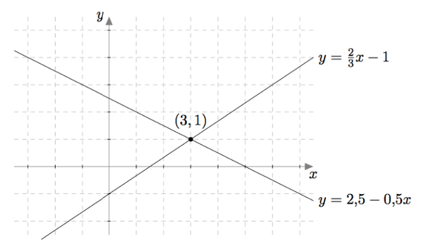
Yllä olevasta kuvasta havaitaan, että yhtälöparilla $$ \left\{\begin{aligned} x+2y &= 5 \\ 2x-3y &= 3. \end{aligned}\right. $$ on tasan yksi ratkaisu, joka määritettiin jo aikaisemmin laskemalla: $x = 3$ ja $y = 1$.
Yhtälöparin ratkaiseminen
Edellisessä tehtävässä ratkaistiin yhtälöpari $$ \left\{\begin{aligned} 3x-3y &= 1 \\ x+3y &= 5. \end{aligned}\right. $$ Havainnollista ratkaisua piirtämällä koordinaatistoon yhtälöä $3x-3y = 1$ vastaava suora ja yhtälöä $x+3y = 5$ vastaava suora.
Pystyisitkö päättelemään pelkän piirroksen avulla, mitkä luvut toteuttavat tämän yhtälöparin?
Yhtälöparin ratkaisujen lukumäärää voidaan siis tutkia graafisesti. Esimerkiksi yhtälöpari $$ \left\{\begin{aligned} -2x+y &= -3 \\ 4x-2y &= 3 \end{aligned}\right. $$ voidaan kirjoittaa myös muodossa $$ \left\{\begin{aligned} y &= 2x-3 \\ -2y &= -4x+3 \end{aligned}\right. $$ ja edelleen muodossa $$ \left\{\begin{aligned} y &= 2x-3 \\ y &= 2x-\frac{3}{2}. \end{aligned}\right. $$ Näitä yhtälöitä vastaavat suorat ovat yhdensuuntaiset, kuten alla olevasta kuvasta nähdään:
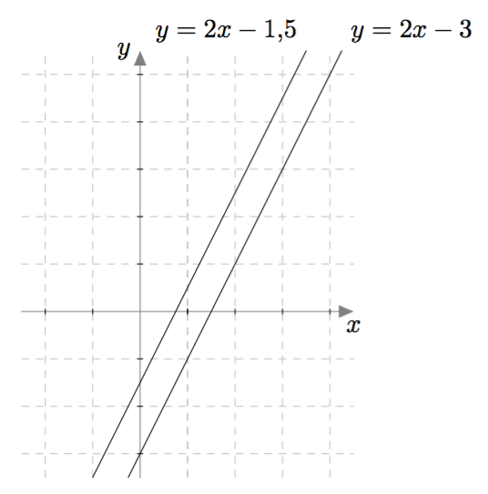
Tarkasteltavalla yhtälöparilla ei siis ole yhtään ratkaisua. Samaan tulokseen päädytään myös laskennallisesti: Yhtälöparin ensimmäinen yhtälö voidaan kirjoittaa muodossa $y = 2x-3$. Jos se sijoitetaan toiseen yhtälöön, saadaan yhtälö $$4x-2(2x-3) = 3.$$ Sieventämällä yhtälön vasenta puolta saadaan $$4x-4x+6 = 3$$ eli $$6 = 3.$$ Tämä yhtälö ei toteudu millään tuntemattomien $x$ ja $y$ arvoilla, joten yhtälöparilla ei ole yhtään ratkaisua.
Yhtälöparin ratkaiseminen
Ratkaise yhtälöpari $$ \left\{\begin{aligned} 3x+2y &= 6 \\ 9x &= 27-6y. \end{aligned}\right. $$ Havainnollista ratkaisua piirtämällä. Pystyisitkö päättelemään pelkän piirroksen avulla, mitkä luvut toteuttavat tämän yhtälöparin?
Edellä on tarkasteltu yhtälöpareja, jotka ovat muotoa $$ \left\{\begin{aligned} ax+by &= c \\ mx+ny &= k, \end{aligned}\right. $$ missä $a$, $b$, $c$, $m$, $n$ ja $k$ ovat reaalilukuja. Tällaisia yhtälöpareja sanotaan ensimmäisen asteen yhtälöpareiksi. Edellä nähtiin, että tällaisella ensimmäisen asteen yhtälöparilla voi olla tasan yksi ratkaisu tai ei yhtään ratkaisua riippuen siitä, onko yhtälöparia vastaavilla suorilla leikkauspiste vai ei. Näiden vaihtoehtojen lisäksi on vielä kolmaskin mahdollisuus: yhtälöparin kumpikin yhtälö voi vastata samaa suoraa. Tällöin yhtälöparilla on äärettömän paljon ratkaisuja, koska kyseisen suoran jokainen piste on yksi ratkaisu.
Yhtälöparin ratkaiseminen
Tarkastele yhtälöparia $$ \left\{\begin{aligned} 2y &= 4x-6 \\ 2x-y &= 3. \end{aligned}\right. $$
- Piirrä yhtälöparin ensimmäistä yhtälöä vastaava suora koordinaatistoon.
- Piirrä yhtälöparin toista yhtälöä vastaava suora koordinaatistoon.
- Päättele piirroksesi avulla kolme erilaista ratkaisua yhtälöparille. Tarkista laskemalla, että ne todella ovat ratkaisuja.
- Tiedetään, että $(x,y)$ on yhtälöparin ratkaisu ja $x = 100$. Määritä $y$.
- Tiedetään, että $(x,y)$ on yhtälöparin ratkaisu ja $x = 111$. Määritä $y$.
- Millaista muotoa yhtälöparin ratkaisut $(x,y)$ ovat? Toisin sanottuna jos $x = t$, niin mikä on $y$? (Tässä $t$ on reaaliluku.)
Yhtälöryhmiä, joissa yhtälöitä ja tuntemattomia on useampia, voidaan ratkaista samaan tapaan kuin edellä ratkaistiin kahden tuntemattoman yhtälöpareja. Esimerkiksi yhtälöryhmää $$ \left\{\begin{aligned} x-3y-2z &= 0 \\ -x+2y-\phantom{2}z &= -5 \\ 3x+4y+\phantom{2}z &= 1 \end{aligned}\right. $$ ratkaistaessa voidaan ensin ratkaista ylimmästä yhtälöstä $x$: $$x = 3y+2z.$$ Se voidaan sijoittaa kahteen alempaan yhtälöön: $$ \left\{\begin{aligned} -(3y+2z)+2y-z &= -5 \\ 3(3y+2z)+4y+z &= 1 \end{aligned}\right. $$ Kertomalla sulut auki yhtälöt saadaan muotoon $$ \left\{\begin{aligned} -3y-2z+2y-z &= -5 \\ 9y+6z+4y+z &= 1. \end{aligned}\right. $$ Sievennetään vielä yhtälöiden vasemmat puolet, jolloin ne näyttävät tältä: $$ \left\{\begin{aligned} -y-3z &= -5 \\ 13y+7z &= 1. \end{aligned}\right. $$ Koko yhtälöryhmä on siis tässä vaiheessa $$ \left\{\begin{aligned} x &= 3y+2z \\ -y-3z &= -5 \\ 13y+7z &= 1. \end{aligned}\right. $$ Ratkaistaan keskimmäisestä yhtälöstä $y$ muutaman välivaiheen kautta, jolloin saadaan $$y = 5-3z.$$ Tässä kannattaa itse miettiä kynän ja paperin kanssa, millaisia välivaiheita ratkaisussa oli. Sijoitetaan tämä alimpaan yhtälöön: $$13(5-3z)+7z = 1.$$ Kertomalla sulut auki yhtälö saadaan muotoon $$65-39z+7z = 1.$$ Tästä saadaan ratkaistua $$-32z = -64$$ eli $$z = \frac{-64}{-32} = 2.$$ Koko yhtälöryhmä on tässä vaiheessa $$ \left\{\begin{aligned} x &= 3y+2z \\ y &= 5-3z \\ z &= 2. \end{aligned}\right. $$ Kun nyt $z$:n arvo tunnetaan, saadaan muut tuntemattomat ratkaistua sen avulla vaiheittain: $$ \left\{\begin{aligned} z &= 2 \\ y &= 5-3z \\ &= 5-3\cdot 2 \\ &= 5-6 \\ &= -1\\ x &= 3y+2z \\ &= 3\cdot(-1) + 2\cdot 2 \\ &= -3+4 \\ &= 1. \end{aligned}\right. $$ Nämä laskut osoittavat, että tarkastellulla yhtälöryhmällä on enintään yksi ratkaisu. Tarkistetaan vielä sijoittamalla, että kaikki yhtälöt todella toteutuvat, jos $x = 1$, $y = -1$ ja $z = 2$: $$ \left\{\begin{aligned} x-3y-2z &=1-3\cdot(-1)-2\cdot 2 \\ &= 1+3-4 \\ &= 4-4 \\ &=0 \\ -x+2y-\phantom{2}z &= -1 + 2\cdot(-1)-2 \\ &= -1-2-2 \\ &= -3-2 \\ &= -5 \\ 3x+4y+\phantom{2}z &= 3\cdot 1 + 4\cdot (-1) + 2 \\ &= 3-4+2 \\ &= -1 + 2 \\ &= 1 \end{aligned}\right. $$ Kaikki yhtälöt toteutuvat, joten yhtälöryhmän ratkaisu on $x = 1$, $y = -1$ ja $z = 2$.
Yhtälöryhmän ratkaiseminen
Ratkaise yhtälöryhmä $$ \left\{\begin{aligned} x-2y+3z &= 5 \\ -x+2y-4z &= -4 \\ 6x-\phantom{2}y + 5z &= 10 \end{aligned}\right. $$
Vektoreiden pistetulo ja vektoreiden välinen kulma
Kolmiulotteisen koordinaatiston vektoreiden pistetulo määritellään samaan tapaan kuin $xy$-koordinaatiston vektoreiden pistetulo:
MÄÄRITELMÄ: PISTETULO
Vektoreiden $\vv=x_1\vi+y_1\vj + z_1\vk$ ja $\vw=x_2\vi+y_2\vj + z_2\vk$ pistetulo on $\vv \cdot \vw = x_1x_2+y_1y_2 + z_1z_2$.
Kolmiulotteisen avaruuden vektorien pistetulolla on samat ominaisuudet kuin $xy$-koordinaatiston vektorien pistetulolla. Näistä tärkeimmät on koottu alla olevaan teoreemaan, jotka on perusteltu $xy$-koordinaatiston tapauksessa edellisessä luvussa.
TEOREEMA
- Vektorit $\vv\neq \bar{0}$ ja $\vw\neq \bar{0}$ ovat toisiaan vastaan kohtisuorassa, jos ja vain jos $$\vv \cdot \vw = 0.$$
- Vektorin pistetulo itsensä kanssa on yhtä suuri kuin vektorin pituuden neliö. Toisin sanottuna $$\vv \cdot \vv = \left|\vv\right|^2.$$
Pistetulo
Määritä reaaliluku $t$ siten, että vektorit $\vv = 2\vi-5t\vj + 3t\vk$ ja $\vw = \vi + \vj - t\vk$ ovat kohtisuorassa toisiaan vastaan.
Tutkitaan seuraavaksi vektoreiden välisen kulman ja pistetulon yhteyttä. Vektoreiden välinen kulma voidaan laskea Geometria-kurssista tutun kosinilauseen avulla. Kosinilause on Pythagoraan lauseen yleistys. Pythagoraan lause pätee ainoastaan suorakulmaisille kolmioille, mutta kosinilausetta voi käyttää kaikille kolmioille. Kosinilauseen mukaan alla olevan kuvan kolmiossa $$ c^2=a^2+b^2-2ab \cos \gamma. $$
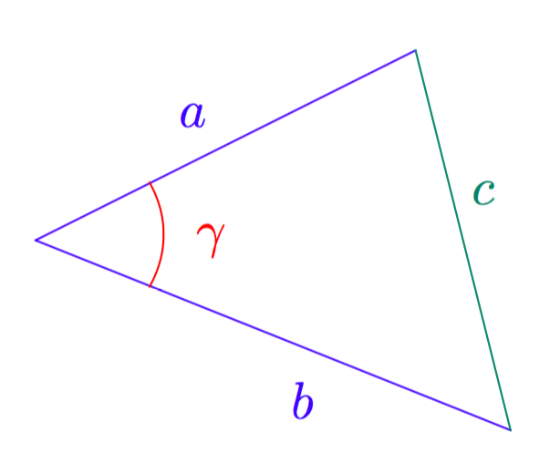
Jos kolmion sivujen pituudet ajatellaan vektoreiden pituuksina kuten alla olevassa kuvassa, saadaan kosinilauseesta yhtälö $$ |\vv-\vw|^2=|\vv|^2+|\vw|^2-2|\vv||\vw| \cos(\vv,\vw). $$
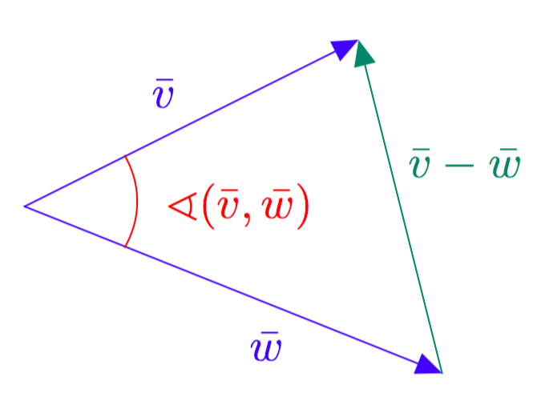
Kosinilauseen ja pistetulon ominaisuuksien avulla saadaan perusteltua seuraava edellisestä luvusta tuttu teoreema, joka yhdistää pistetulon ja vektoreiden välisen kulman.
TEOREEMA
Vektoreiden $\vv$ ja $\vw$ pistetulolle pätee $$\vv \cdot \vw = |\vv||\vw|\cos (\vv, \vw).$$ Jos $\vv \neq \bar{0}$ ja $\vw \neq \bar{0}$, niin vektoreiden $\vv$ ja $\vw$ välinen kulma saadaan yhtälöstä $$ \cos (\vv, \vw)=\frac{\vv \cdot \vw}{|\vv||\vw|}. $$
Perustelu: Tiedetään, että vektorin pituuden neliö on aina sama kuin sen pistetulo itsensä kanssa. Tästä saadaan seuraava yhtälöketju: $$ \begin{align*} |\vv-\vw|^2 &=(\vv-\vw)\cdot(\vv-\vw) \\ &= \vv \cdot \vv -\vv\cdot\vw - \vw \cdot \vv+\vw\cdot\vw \\ &= |\vv|^2 - 2(\vv\cdot\vw) +|\vw|^2. \end{align*} $$ Toisaalta kosinilauseen mukaan $$ |\vv-\vw|^2=|\vv|^2+|\vw|^2-2|\vv||\vw| \cos(\vv,\vw). $$ Yhdistämällä edelliset tiedot saadaan yhtälö $$ |\vv|^2 - 2(\vv\cdot\vw) +|\vw|^2 = |\vv|^2+|\vw|^2-2|\vv||\vw| \cos(\vv,\vw). $$ Ratkaistaan tästä $\vv\cdot\vw$, jolloin saadaan $$ \vv\cdot\vw = |\vv||\vw| \cos(\vv,\vw). $$ Jos $\vv \neq \bar{0}$ ja $\vw \neq \bar{0}$, niin vektoreiden $\vv$ ja $\vw$ pituudet ovat positiivisia. Jakamalla yhtälön molemmat puolet tulolla $|\vv||\vw|$ saadaan $$ \cos (\vv, \vw)=\frac{\vv \cdot \vw}{|\vv||\vw|}. $$
Pistetulo
Puuttuu.
TEHTÄVÄSARJA I
Tarkastele alla olevan kuvan suorakulmaista särmiötä.
- Määritä pisteiden koordinaatit.
- Piste $B$ on $xy$-tasossa. Missä tasossa pisteet $D$ ja $F$ sijaitsevat?
Kolmion kärjet sijaitsevat pisteissä $A=(1,2,4)$, $B=(2,0,1)$ ja $C=(2,-3,0)$. Laske kolmion sivujen pituudet.
Tarkastele vektoria $\vv=3\vi+6\vj-6\vk$.
- Määritä vektorin $\vv$ suuntainen yksikkövektori.
- Määritä vektorin $\vv$ kanssa vastakkaissuuntainen vektori $\vw$, jonka pituus on 10.
- Siirryt pisteestä $A=(1,-5,2)$ kahdeksan koordinaatiston yksikön verran vektorin $\vv$ suuntaan. Mihin pisteeseen päädyt?
Lennonjohtaja tarkkailee kahden koneen sijaintia. Havaintohetkellä lentokone $A$ on lentokentästä $4,0$ km länteen ja $2,0$ km pohjoiseen, ja lentokone $B$ on $1,0$ km itään ja $7,0$ km etelään. Kuinka kaukana lentokoneet ovat toisistaan, kun lentokone $A$ lentää $5$ km korkeudella ja lentokone $B$ $3$ km korkeudella.
Kuljet origosta pisteeseen $A=(6,-4,-2)$. Alkumatkan kuljet $xy$-tasossa ja loppumatkan vektorin $\vv=2\vi+2\vj-\vk$ kanssa yhdensuuntaisesti.
- Missä pisteessä poistut $xy$-tasosta?
- Kuinka pitkän matkan kuljit yhteensä?
Neliöpohjainen suora pyramidi, jonka pohjaneliön sivun pituus on 3, asetetaan koordinaatistoon siten, että pyramidin huippu on positiivisella $y$-akselilla, pohjan keskipiste origossa ja pohjaneliön sivut $x$- ja $z$-akselien suuntaiset.
- Piirrä tilanteesta kuva.
- Määritä pyramidin kärkien koordinaatit.
- Ilmaise pyrämidin huipusta lähtevät särmät vektorien $\vi$, $\vj$ ja $\vk$ avulla.
Mitkä ovat ne $z$-akselin pisteet, josta tarkasteltuna pisteet $A=(3,-5,1)$ ja $B=(-4,7,-2)$ yhdistävä jana näkyy syorassa kulmassa?
Tarkastele vektoreita $\vv=2\vi-\vj+\vk$ ja $\vw=-\vi-\vj+2\vk$.
- Määritä jokin vektoreita $\vv$ ja $\vw$ vasten kohtisuorassa oleva vektori.
- Määritä kaikki vektorit, jotka ovat vektoreita $\vv$ ja $\vw$ vasten kohtisuorassa.
- Määritä kaikki yksikkövektorit, jotka ovat vektoreita $\vv$ ja $\vw$ vasten kohtisuorassa.
Tarkastele pisteitä $A=(7,2,-9)$ ja $B=(2,-3,6)$.
- Muodosta vektori $\pv{AB}$.
- Mihin pisteeseen päädyt, kun lähdet pisteestä $(-1,5,8)$ ja kuljet vektorin $\pv{AB}$?
Tarkastele vektoreita $\va=-3\vi+8\vj-4\vk$ ja $\vb=\vi-r\vj+2\vk$. Etsi sellainen reaaliluku $r$, että vektorit $\va$ ja $\vb$ ovat
- yhtä pitkät
- yhdensuuntaiset.